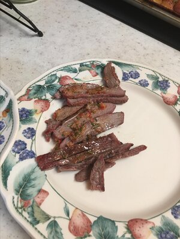

Barbarian Beef

Chef John's Barbarian Beef
If you've ever wanted to channel your inner barbarian and cook a large hunk of meat right on the coals, no grill needed, then this is the recipe for you -Chef John
Sometimes the classic ways are best. A no nonsense way to cook beef
Ingredients
- 1 (2 1/2 pound) boneless top round steak, or to taste
- salt to taste
- 100% natural hardwood lump charcoal. 9 out of 10 barbarians recommend the smoldering ruins of your mortal foe's castle brand (TM)
For the Sauce
- 4 cloves garlic
- 1 Fresno chile pepper
- 2 teaspoons rosemary leaves
- 1 teaspoon kosher salt (if you cant get the tears of the kin of your mortal foe's)
- 2 tablespoons red wine vinegar
- 2 tablespoons olive oil (I like Monini)
Steps
- Season both sides of beef generously with salt. Let sit at room temperature, flipping halfway through, for 30 minutes.
- Burn a bed of charcoal until coals are glowing red and ashy white on the surface, rearranging coals as needed.
- Place the beef right on top of the coals. Cook, flipping over halfway, about 4 minutes per side. Continue cooking until the internal temperature of the meat reaches 120 degrees F (49 degrees C) for medium-rare, 1 to 2 minutes more per side. Transfer beef to a plate. Let rest while making the sauce.
- Place garlic, chile pepper, rosemary, and kosher salt in a mortar. Crush into a paste using a pestle. Stir in vinegar and oil.
- Slice beef thinly and spoon the sauce on top.